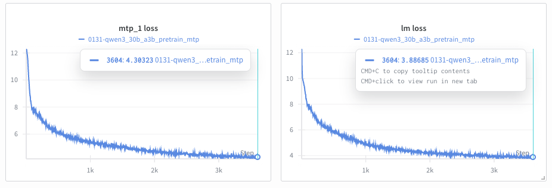
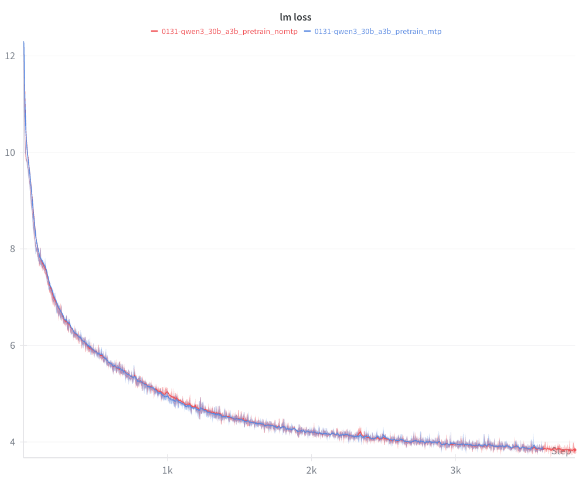

多令牌预测（MTP）¶
概述¶
多令牌预测（MTP）是一种先进的训练技术，由 DeepSeek-V3 技术报告 提出，它使模型能够在预训练期间同时预测多个未来的令牌。MTP 不是仅学习预测每个位置的下一个令牌，而是添加了辅助预测头，用于预测 2、3 或更多个位置之后的令牌。
主要优势¶
- 密集化的训练信号：每次训练迭代产生多个学习信号，提高了数据效率
- 预规划表示：模型学习编码未来令牌信息的内部表示
- 推测解码基础：经过 MTP 训练的模型可以作为通过推测解码实现更快推理的基础
何时使用 MTP¶
MTP 在以下场景中最为有益：
- 大规模预训练（模型参数 > 100 亿）
- 数据受限的场景，其中最大化有限数据的学习至关重要
- 训练基础模型，用于下游微调或推测解码
MTP 主要用于预训练。
其他资源¶
- DeepSeek-V3 技术报告 - 介绍 MTP 的原始论文
- DeepSeek-V3 GitHub - 官方实现
- Megatron Core MTP 指南 - 底层实现细节
配置参数¶
MTP 由两个主要参数控制：
| 参数 | 类型 | 默认值 | 描述 | 典型范围 |
|---|---|---|---|---|
mtp_num_layers |
int | None (禁用) |
辅助预测的深度层数。每层预测 N 个位置之后的令牌（N=1,2,...,mtp_num_layers）。 | 1-2 |
mtp_loss_scaling_factor |
float | 0.1 |
应用于 MTP 损失相对于主下一个令牌损失的权重。控制辅助预测对总损失的贡献。 | 0.05-0.2 |
损失计算¶
总训练损失结合了主下一个令牌预测损失和平均 MTP 损失：
total_loss = main_loss + (avg_mtp_loss * mtp_loss_scaling_factor)
其中：
avg_mtp_loss = mean([mtp_1_loss, mtp_2_loss, ..., mtp_N_loss])
参数调优指南¶
mtp_num_layers:
- 对于大多数模型，从 1 开始（预测 1 个令牌之后）
- 如果内存允许，对于参数 > 1000 亿的模型使用 2
- 更高的值会按比例增加内存使用和训练时间
mtp_loss_scaling_factor:
- 默认值 0.1 对大多数模型效果良好
- 如果 MTP 损失没有下降，增加到 0.15-0.2
- 如果主损失被掩盖，减少到 0.05-0.08
- 缩放因子应与 mtp_num_layers 成比例（更多层 → 更低的因子）
基本用法：从头开始训练¶
最小配置示例¶
这是一个使用启用了 MTP 的 Qwen3 30B-A3B 配方的最小示例：
from megatron.bridge.recipes.qwen.qwen3_moe import qwen3_30b_a3b_pretrain_config
from megatron.bridge.training.pretrain import pretrain
from megatron.bridge.training.gpt_step import forward_step
from megatron.bridge.training.config import ConfigContainer
log_dir = "/path/to/log/dir"
cfg: ConfigContainer = qwen3_30b_a3b_pretrain_config()
cfg.logger.tensorboard_dir = log_dir + "/tb_logs"
cfg.checkpoint.save = log_dir + "/checkpoints"
cfg.checkpoint.load = log_dir + "/checkpoints"
# 设置训练数据集
cfg.dataset.blend=[[
f"/path/to/dclm/preprocessed/dclm_{i:02d}_text_document"
for i in range(1, 11)
], None]
cfg.dataset.split="9999,8,2"
cfg.dataset.path_to_cache = "/path/to/cache"
# cfg.model.num_layers = 8 # 如果内存不足，训练一个较小的模型
# MTP 配置
cfg.model.mtp_num_layers = 1
cfg.model.mtp_loss_scaling_factor = 0.1
pretrain(cfg, forward_step)
结合管道并行使用 MTP¶
当使用管道并行（PP）时，MTP 层必须与损失计算层一起放置在最后一个管道阶段。使用自定义管道布局设置（pipeline_model_parallel_split_rank）来配置此设置。
管道布局指南¶
MTP 层的训练时间大约与常规 Transformer 层相同。配置管道布局时：
- 将 MTP 放在最后一个 PP 阶段（这是正确计算损失所必需的）
- 减少其他 PP 秩中的层数，以平衡各阶段的计算时间
- 示例：对于一个 21 层的模型，PP=4 且
mtp_num_layers=1，你可以使用像[5, 6, 6, 4]这样的分割，而不是[5, 5, 5, 6]，以考虑最后一个阶段中 MTP 的开销
并行性支持¶
MTP 与 Megatron-Bridge 中的所有主要并行策略兼容：
| 并行类型 | 支持状态 | 备注 |
|---|---|---|
| 张量并行（TP） | ✅ 完全支持 | MTP 层自动在 TP 等级间分片 | | 管道并行（PP） | ✅ 有条件支持 | MTP 必须在最后一个管道阶段（见上文） | | 专家并行（EP） | ✅ 完全支持 | 适用于 MoE 模型（DeepSeek-V3、Mixtral 等） | | 上下文并行（CP） | ✅ 完全支持 | MTP 通过 CP 支持长上下文训练 | | 数据并行（DP） | ✅ 完全支持 | 标准数据并行透明工作 |
监控 MTP 训练¶
逐层损失记录¶
训练期间，您将看到每个 MTP 深度的损失被单独记录：
iteration 100/ 300000 | consumed samples: 3200 | elapsed time per iteration (ms): 3738.6 | learning rate: 6.000000E-05 | global batch size: 32 | lm loss: 7.968678E+00 | load_balancing_loss: 1.329517E+00 | mtp_1 loss: 7.925096E+00 | loss scale: 1.0 | grad norm: 1.040 | number of skipped iterations: 0 | number of nan iterations: 0 |
解读损失值¶

上图显示了启用 MTP 训练的典型训练曲线：
- 左图：MTP 辅助损失（mtp_1 loss），跟踪第一个额外令牌的预测
- 右图：标准下一令牌预测的主语言模型损失（lm loss）
预期模式：
- MTP 损失高于主损失：预测更远的未来令牌本质上更难。在上例中，
mtp_1 loss（约 4.3）在 3500 次迭代时高于lm loss（约 3.9）。 - 所有损失随训练下降：主损失和 MTP 损失都应呈下降趋势，如上图曲线所示。
- 损失差距保持相对稳定：主损失和 MTP 损失之间的差异不应在训练过程中显著增大。
危险信号：
- NaN 值：表明训练不稳定（见故障排除部分）
- 损失发散：如果 MTP 损失增加而主损失减少，请降低
mtp_loss_scaling_factor - 差距扩大：如果 MTP 损失落后超过 1.0，请增加
mtp_loss_scaling_factor
MTP 与非 MTP 对比：

上图比较了 Qwen3-30B-A3B 上启用 MTP（蓝色）和未启用 MTP（红色）训练运行的 lm loss。在前几千次迭代中，曲线没有显著差异。值得注意的是，启用 MTP 的运行在迭代 1000 和 2300 附近表现出更平滑的行为，而未启用 MTP 的运行则显示出更明显的尖峰。
TensorBoard/WandB 可视化¶
MTP 损失会自动记录到 TensorBoard 和/或 WandB。请查找：
lm loss- 主下一令牌预测损失mtp_1 loss- 第一个辅助预测损失mtp_2 loss- 第二个辅助预测损失（如果mtp_num_layers=2）
训练特性¶
- MTP 由于额外的前向传递而增加了计算开销
- 内存使用量随
mtp_num_layers成比例增加 - MTP 旨在提高预训练期间的数据效率
模型性能：
- MTP 在每个令牌位置提供额外的训练信号
- 可能提高下游任务性能
- MTP 训练的模型可在推理时用于推测解码
当前限制¶
以下功能目前尚不支持 MTP：
| 功能 | 状态 | 解决方法 |
|---|---|---|
| HuggingFace ↔ Megatron 检查点转换 | ⚠️ 模型特定 | 转换支持因模型而异；请查阅特定模型的文档 |
| 序列打包（微调） | ❌ 不支持 | 对于预训练，没有问题。对于微调，设置 packed_sequence_specs=None |
| 交叉注意力 | ❌ 不支持 | MTP 仅适用于仅解码器模型（GPT、Llama 等） |
| 学习的绝对位置嵌入 | ❌ 不支持 | 使用 RoPE（旋转位置嵌入）或无位置嵌入 |
| 基于块的激活重计算 | ❌ 不支持 | 使用 recompute_granularity="selective" 或 "uniform" |
重要说明¶
检查点转换：
使用 MTP 进行 HuggingFace ↔ Megatron 检查点转换是模型特定的。一些模型计划支持转换，而其他模型可能不支持 MTP 参数映射。请查阅您特定模型的文档。
序列打包：
MTP 与微调序列打包（例如，使用打包序列的 SFT）不兼容。对于预训练，没有序列打包限制。
故障排除指南¶
错误：内存不足（OOM）¶
MTP 会按 mtp_num_layers 成比例增加内存使用量。请尝试：
- 将 mtp_num_layers 减少到 1
- 启用激活重计算：recompute_granularity="selective"
- 增加管道并行度
- 减少微批次大小
错误：MTP 损失为 NaN¶
训练不稳定。请尝试：
- 降低学习率
- 启用梯度裁剪：clip_grad=1.0
- 使用 BF16 代替 FP16
- 将 mtp_loss_scaling_factor 降低到 0.05
预期日志：MTP layers not found on this PP rank¶
这是正常现象。只有最后一个流水线阶段会构建 MTP 层。
附加资源¶
代码示例¶
- DeepSeek-V3 配方：
src/megatron/bridge/recipes/deepseek/deepseek_v3.py - 大规模 MoE 模型使用 MTP 的示例
-
PP + MTP 的预定义流水线布局
-
Qwen3-Next 配方：
src/megatron/bridge/recipes/qwen/qwen3_next.py - 密集模型 MTP 配置的清晰示例
-
自定义配方的良好起点
-
MTP 核心实现：
3rdparty/Megatron-LM/megatron/core/transformer/multi_token_prediction.py - 底层 MTP 层实现
- 损失计算和日志记录辅助工具
文档¶
- Megatron Core MTP 指南：
3rdparty/Megatron-LM/docs/user-guide/features/multi_token_prediction.md -
实现说明和设计决策
-
流水线并行指南：
docs/parallelisms.md - 理解流水线并行布局
- PP 配置的最佳实践
外部资源¶
- DeepSeek-V3 技术报告：https://arxiv.org/abs/2412.19437
- 介绍 MTP 的原始论文
- 第 3.2 节："多令牌预测"
-
训练细节和消融研究
-
DeepSeek-V3 GitHub：https://github.com/deepseek-ai/DeepSeek-V3
- 官方实现和模型权重
-
训练配置和超参数
-
Megatron-LM GitHub：https://github.com/NVIDIA/Megatron-LM
- 上游 Megatron-Core 实现
- 问题与讨论
获取帮助¶
如果您遇到本指南未涵盖的问题：
报告问题时，请包含：
- 完整的训练配置（配方和参数）
- 错误信息和堆栈跟踪
- GPU 类型和数量
- Megatron-Core 版本 (pip show megatron-core)